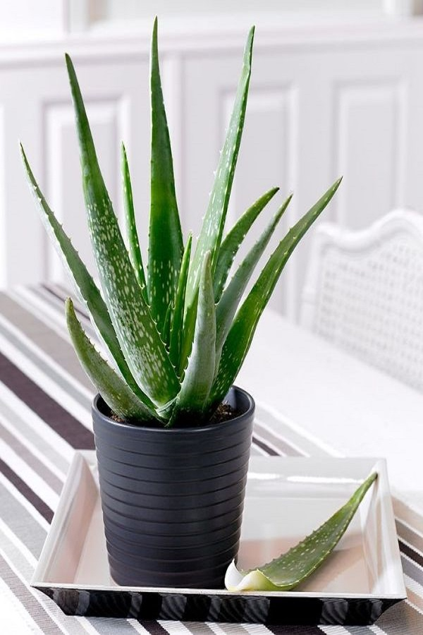
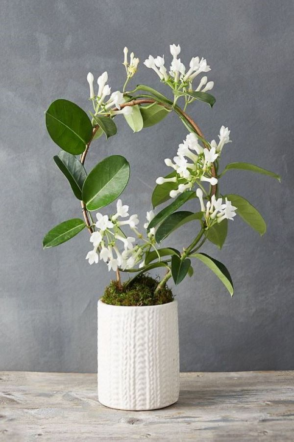

-
Ornamental and Aromatic
Example- Grape Ivy, Croton, Lemon balm, Areca fern, etc: begginer.Indoor plants are a great way to bring the nature indoors. They complement your home decor, enhance your home's beauty and deliver fragrant aromas. These plants can replace sweet artificial air fresheners and clean your indoor air naturally. Some folks grow houseplants as a relaxing hobby or to add a decorative touch to a room.
-
Air purifier
Example- Pothos, Garden Mum, Bamboo palm, Peace lily, etc: begginer.Lack of air flow allows for indoor air pollution to build up and cause health issues like asthma or sick building syndrome. NASA discovered that houseplants can absorb harmful toxins from the air, especially in enclosed spaces with little air flow. While plants have less horse power than air purifiers, they’re more natural, cost effective, and therapeutic.
-
 Medicinal
Example- Aloe vera, Lemon grass, Chamomile, Parsley, etc: begginer.Mother Nature is a brilliant chemist. From earliest times, our ancestors have learned to use plants to heal and promote good health." And while modern science is identifying those that have real value for improving our lives
-

Insect Repellant
Example- Marigold, Lavender, Rosemary, Basil, etc: intermediate.There are some houseplants can help you repel bugs. Nature provides its own insect repellants, and while some of the plants on this list may also pose a danger to a child or pet if ingested, if placed out of reach, they can be extremely effective at shooing bugs away from you and your family. They smell nice, too.
-
Good Luck
Example- Lucky Bamboo, Tulsi, Orchids, Money Plants, etc: begginer.The selection of plants is dependent on the aesthetics and outlook you want to create within your home. Of course, there is the issue of size and maintenance. Greenery within the household not only adds purity to the air but also wealth, health and love. Feng Shui is an art that patronises keeping plants within homes.
-
 Psychoactive
Example- Roses, Gotukola, Periwinkle, Ashwagandha, etc: begginer.Psychoactive plants are very common in nature, and while cannabis isn’t known for much else besides its effects on the brain, many legal plants used for mundane purposes have little-known mind-altering properties — and they’re growing in parks, gardens, windowsills fields and forests
-
Spider Plant
Botanical name: Chlorophytum comosum: begginer.one of the easiest indoor plants to maintain and a favourite on your journey of discovery with indoor plants. With long slender sword-like leaves that arch from a common central crown, these graceful plants work well in hanging baskets or atop shelves and tables to allow for their trailing habits to be on full display.
Benefits: filters formaldehyde, xylene and toluene; produces oxygen in large amount. -

Garden mum
Botanical name: Chrysanthemum morifolium: begginer.This plant also is from the NASA research, this plant is an air-purifying champion. Popular and very cheap at garden stores, they can be planted outside after they’re finished blooming.
Benefits: removes ammonia, benzene, formaldehyde, and xylene from indoor air -
Grape Ivy
Botanical name: crassula ovata: begginer.It’s easy to grow, forgiving when you forget to water, and adds a touch of the tropics to any space. Grape ivy is a vine, so shows to advantage in hanging baskets and urns where it will cascade over the side. Plant it in a container with a trellis and for a bright vertical accent.
Ornamentation: develop beautiful white or pink flowers that bloom in the shape of a star, a unique room decoration -

Peppermint
Botanical name: Mentha: begginer.Mint is a perennial with very fragrant, toothed leaves and tiny purple, pink, or white flowers. It has a fruity, aromatic taste. This easy to grow indoor plant is one of the best medicinal plants for the respiratory system. You can chew it freshly, add the leaves to your tea, or make some essential oils.
Benefits: It soothes headaches and relieves stress as well. Rodent-repellant.